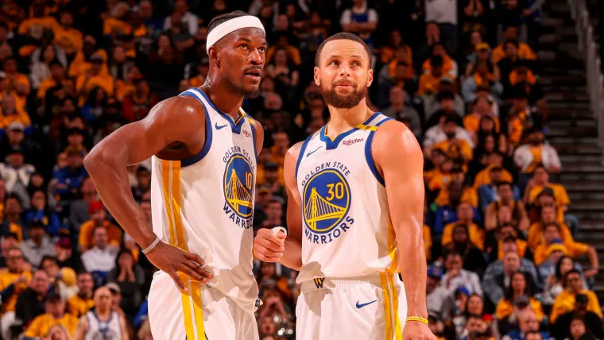
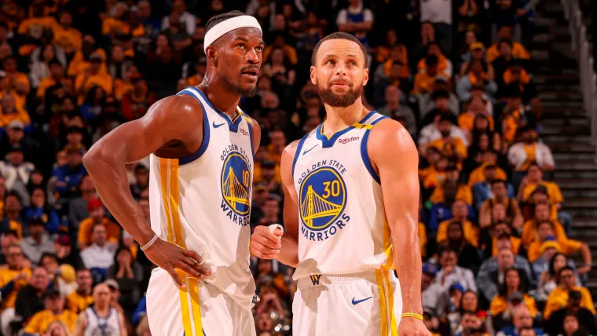

Informacion adicional
En el peor momento, los Warriors la han liado. Con apenas dos partidos para el final de la regular season, lo que queda de la última gran dinastía de la historia de la NBA tenía un, aparentemente, duelo sencillo frente a unos Spurs que no se jugaban nada. Y en casa. Pero un triple de Harrison Barnes sobre la bocina certificó la derrota de un equipo que no supo ganar antes el partido. Precisamente el alero, denostado por la franquicia de Golden State tras las históricas Finales de 2016 (las que remontó LeBron James con sus Cavaliers), puso rumbo a la clandestinidad como chivo expiatorio para hacer hueco a Kevin Durant, con las consecuencias que eso tuvo. Y ahora, ha provocado que los Warriors, su exequipo, pasen de estar a un paso de tener ventaja de campo en primera ronda de playoffs a caer al play in. Algo que ni ellos mismos esperaban, pero que saben que es lo que merecen. Es lo que tiene perder de forma incomprensible ante un rival que no se jugaba nada, pero que sin nada que perder cuajó una actuación estupenda que les va a servir para irse contentos al verano. Un buen trago para algunos, pero que hace atragantarse a los otros. Por lo que sea.
 
